ВЕДОМСТВЕННЫЕ СТРОИТЕЛЬНЫЕ НОРМЫ
ПРОЕКТИРОВАНИЕ И УСТРОЙСТВО
СВАЙНЫХ ФУНДАМЕНТОВ, РАСПОЛОЖЕННЫХ
В ВЕРХНЕМ НЕСУЩЕМ СЛОЕ,
ПОДСТИЛАЕМОМ СЛАБЫМИ ГРУНТАМИ
ВСН 487-86
Минмонтажспецстрой СССР
МИНИСТЕРСТВО МОНТАЖНЫХ И СПЕЦИАЛЬНЫХ
СТРОИТЕЛЬНЫХ РАБОТ СССР
Москва 1987
РАЗРАБОТАНЫ
организациями Минмонтажспецстроя СССР: ВНИИГСом (А.Н. Поляков, канд. техн. наук А.Я. Серебро, канд. техн. наук Е.М. Перлей, канд. техн. наук М.Ю. Николаевский, В.В. Петров), ГПИ Фундаментпроект (канд. техн. наук М.Н. Пинк, ГМ. Лешин), ЛПИ им. М.И. Калинина Минвуза РСФСР (кандидаты техн. наук С.Я. Смолко, В.Я. Хотяков), а также Ленгипрогором Госстроя РСФСР (А.М. Кацман, В.П. Иофинов).
ВНЕСЕНЫ
Главным техническим управлением Минмонтажспецстроя СССР.
ПОДГОТОВЛЕНЫ К УТВЕРЖДЕНИЮ
Отделом норм и стандартов ГТУ Минмонтажспецстроя СССР.
|
Министерство монтажных и специальных строительных работ СССР (Минмонтажспецстроя СССР) |
Ведомственные строительные нормы |
ВСН 487-86 Минмонтажспецстрой |
|
|
Проектирование и устройство свайных фундаментов, расположенных в верхнем несущем слое, подстилаемом слабыми грунтами |
|||
|
Впервые |
Настоящие ВСН разработаны в дополнение к главам СНиП II-17-77 "Свайные фундаменты" и СНиП 3.02.01-83 "Основания и фундаменты. Правила производства работ" и распространяются на проектирование и строительство свайных фундаментов из забивных свай, расположенных в верхнем несущем слое, подстилаемом слабыми группами со средней удельной нагрузкой на грунт основания, определенной для всей площади сооружения в плоскости низа ростверков, в пределах до 0,20 МПа.
Не допускается пользоваться ВСН при проектировании свайных фундаментов в сейсмических районах, под машины с динамическими нагрузками, промышленные трубы высотой более 150 м, доменные печи и другие специальные сооружения.
1.1. К категории слабых грунтов в настоящих ВСН относятся илы, заиленные пылеватые пески, текучие пылевато-глинистые, торфянистые и другие грунты, модуль деформации которых не превышает 5 МПа.
толщина подстилающих слабых грунтов не должна изменяться в пределах одного здания или сооружения на величину более 0,5 м на 10 м длины, но не более чем на 4,0 м в пределах длины всего здания или сооружения;
минимальное расстояние от нижних концов свай до кровли слабых грунтов должно быть не менее 2,0 м;
минимальная толщина грунта, подстилающего слой слабых грунтов, должна быть не менее 4,0 м.
|
Внесены Главным техническим управлением Минмонтажспецстроя СССР |
Утверждены Минмонтажспецстроем СССР |
Срок введения в действие |
1.3. Длина здания и сооружения или расстояние между их температурно-осадочными швами не должна превышать 60 м.
1.4. Работы по устройству свайных фундаментов должны выполняться с соблюдением основных требований главы СНиП 3.02.01-83 и дополнительных указаний настоящей Инструкции.
1.5. Участок застройки должен быть обеспечен материалами инженерно-геологических изысканий.
1.6. Намывной (насыпной) слой грунта учитывается при определении толщины верхнего несущего слоя в расчетах при условии, что намыв (отсыпка) территории застройки закончен в срок не менее двух лет до начала строительства на нем без дополнительных мероприятий по уплотнению намытого (насыпного) грунта.
В случаях применения искусственного уплотнения намывного (насыпного) слоя указанный срок по согласованию с проектной организацией может быть сокращен с учетом завершения осадок намывного (насыпного) слоя, обусловленных деформацией подстилающих слабых грунтов.
1.7. Очередность и способы производства работ по устройству свайных фундаментов должны быть предусмотрены в проекте организации строительства (ПОС) и увязаны с работами по инженерной подготовке территории и участка строительства и с другими работами нулевого цикла (прокладка подземных коммуникаций, дорог, устройство и наличие рядом фундаментов зданий или сооружений).
1.8. При наличии в верхнем несущем слое в пределах контура пятна застройки здания (сооружения) прослоек слабых грунтов или торфяных прослоек толщиной более 0,5 м рекомендуется предварительное удаление последних в случае их мелкого залегания или устройство вертикальных дрен. При невыполнении этих рекомендаций и наличии в верхнем несущем слое прослоек слабых грунтов, прорезаемых сваями и имеющих площадь не менее 50% площади пятна застройки, расчетную толщину несущего слоя следует определять от нижней поверхности нижней слабой прослойки или при расчете несущей способности свай не учитывать трение по их боковой поверхности выше кровли слабой прослойки.
1.9. При проектировании зданий-пристроек на коротких сваях, расположенных в верхнем несущем слое, подстилаемом слабыми грунтами, около существующих зданий, возведенных на длинных сваях, прорезающих слабые грунты и опирающихся на нижележащий несущий слой, необходимо считаться с возможностью возникновения дополнительных нагрузок на фундамент с длинными сваями, обусловленных уплотнением толщи промежуточного слоя слабых грунтов и проявлением отрицательного трения.
1.10. Окончательное решение об использовании верхнего несущего слоя, подстилаемого слабыми грунтами в качестве основания, для устройства в нем свайных фундаментов здания (сооружения) должно быть обосновано технико-экономическими расчетами и сравнением с вариантом опирания нижних концов свай на нижние несущие грунты, подстилающие слабый слой, и с вариантами устройства фундаментов на естественном основании.
2.1. Основной состав и объем инженерных изысканий для строительства зданий и сооружений в названных выше грунтовых условиях, а также отчетных материалов, выполняемых изыскательской организацией, должны соответствовать "Рекомендациям по инженерным изысканиям для проектирования и устройства свайных фундаментов" (ПНИИС Госстроя СССР. - М., 1983), СНиП II-9-78 и дополнительными указаниями настоящих ВСН.
2.2. Программа изысканий, составляемая изыскательской организацией на основании технического задания, выданного генеральной проектирующей организацией и авторами проекта свайных фундаментов, уточняет цель, задачи и методику инженерно-геологических исследований и должна быть согласована с проектирующей организацией.
2.3. При определении состава, методики и объема изысканий необходимо учитывать:
конструктивные и технологические особенности проектируемых зданий и сооружений (наличие или отсутствие подвалов, фундаментов под оборудование, нагрузки на полы и т.п.);
тип конструктивного решения свайного фундамента (ленточный, кустовой, безростверковый, свайное поле);
величины и характер нагрузок, действующих на фундамент;
требования (ограничения, равномерность) в отношении к осадкам проектируемых зданий и сооружений;
возможные изменения гидрогеологических условий в строительный и эксплуатационный периоды;
обоснование необходимости погружения свай на требуемую глубину,
влияние забивки (вибропогружения) свай на расположенные вблизи здания и сооружения.
2.4. Программа и методика изысканий должны учитывать специфику инженерно-геологических условий площадки строительства. В составе задания на изыскания обязательно должны предусматриваться следующие дополнительные виды работ:
выявление категории сложности грунтовых условий (в соответствии с приложением 3 к "Руководству по проектированию свайных фундаментов");
уточнение по месту глубины буровых скважин и зондирования из условия выяснения грунтовых напластований не менее 5 м ниже предполагаемой подошвы слабых грунтов;
оконтуривание встреченных линз слабых грунтов;
выбор места расположения натурных свай для статических испытаний. В каждом микрорайоне предусматривается 4-8 кустов (по 2 на каждый тип свай для зданий высотой 9 этажей и более);
проведение динамических испытаний одновременно с забивкой свай под статиспытания и с построением графиков забивки;
уточнение модулей деформации при помощи лопастных прессиометров или дилатометров;
прогнозирование изменения уровня грунтовых вод;
прогнозирование стабилизации осадок рефулированного грунта;
выдача рекомендаций по способу погружения свай;
при примыкании к существующему зданию (или при проектировании здания, возводимого в несколько очередей) - определить возможность дополнительного уплотнения грунта при воздействии динамических нагрузок от забивки свай.
2.5. Исследования и испытания слабых грунтов и, в первую очередь, илов должны производиться особенно тщательно и включать определение минералогического состава, дисперсности, структурной прочности, сжимаемости и чувствительности к нарушению структурных связей (степени снижения прочностных и деформационных характеристик грунтов за счет этого), а также времени их восстановления и степени возрастания прочности грунта.
2.6. Число контрольных скважин и точек статического зондирования при составлении программы изысканий назначается исходя из следующих условий:
для отдельно стоящих зданий и сооружений с размерами в плане не более 20´20 м предусматривать не менее трех скважин и пяти точек зондирования;
для комплекса совместно расположенных зданий и сооружений, а также отдельно стоящих зданий с размерами в плане более 20´20 м, скважины располагать по сетке 30´30 м, точки статического зондирования по сетке с размерами от 15´15 м до 30´30 - в зависимости от характера изменения геологических разрезов согласно данным бурения.
3.1. Проектирование свайных фундаментов, расположенных в верхнем несущем слое, подстилаемом слабыми грунтами, должно производиться в соответствии с указаниями настоящих ВСН, исходных данных, отвечающих требованиям главы СНиП II-17-77 и "Инструкции о составе, порядке, разработке, согласовании, утверждении проектно-сметной документации на строительство предприятий, зданий и сооружений" (СН 202-81). Рабочая документация должна содержать:
отчет об инженерно-геологических изысканиях, выполненных в соответствии с указаниями раздела 2 настоящих ВСН;
генплан стройплощадки с нанесением на нем контуров и осей объекта, геологических выработок, привязанных к осям, планировочных и высотных отметок, отметки условного нуля, сведений о ближайших к объекту построенных или намечаемых к строительству подземных сооружений и фундаментов надземных зданий;
конструктивное решение с плановой и вертикальной привязкой подземной части здания или сооружения, в том числе подвалов, фундаментов под оборудование и др.;
расчетные нагрузки на фундаменты в наиболее неблагоприятных сочетаниях с указанием доли временных нагрузок и цикличности их действия, расчетные нагрузки на полы по грунту, фундаменты под оборудование и места их приложения;
сведения о конструктивных особенностях и допустимых деформациях зданий и сооружений, в том числе расположенных вблизи проектируемого объекта, а также об их фундаментах и расчетных нагрузках на них, необходимые для оценки их взаимного влияния при возведении проектируемого объекта.
3.2. Проектирование свайных фундаментов в соответствии с ВСН рекомендуется осуществлять в такой последовательности:
сбор и анализ исходных данных;
предварительное назначение расчетных нагрузок на свайный фундамент, размеров свай и глубины заложения свай и ростверка;
технико-экономическое обоснование принимаемого конструктивного решения свайного фундамента;
определение количества свай и схемы их распределения под каждой несущей конструкцией;
проектирование свайного поля под здание или сооружение в целом;
расчет свайного фундамента по деформациям и уточнение расчетных нагрузок на сваи и глубин их погружения исходя из условия обеспечения абсолютных и относительных деформаций сооружения;
назначение глубины заложения и конструктивных размеров ростверков, уточнение размеров свай;
расчет и проектирование ростверков;
оформление рабочей документации на свайные фундаменты и смет.
односвайные фундаменты и сваи-колонны для одноэтажных бескрановых каркасных зданий с нагрузкой на колонну до 500 кН и опор технологических трубопроводов при нагрузке на опору до 200 кН;
ленточные одно- и двухрядные свайные фундаменты под здания с несущими стенами при распределенной линейной нагрузке на фундамент до 800 кН/м;
кустовые фундаменты под каркасные здания и сооружения при нагрузке на каждую сваю до 800 кН;
фундаменты из свайных полей под промышленные трубы, силосные корпуса, жилые и гражданские здания при удельной нагрузке на фундаменты до 0,20 МПа в плоскости подошвы ростверков.
3.4. При проектировании свайных фундаментов, указанных в п. 3.3 допускается применять следующие типы свай:
забивные квадратного сечения с ненапрягаемой арматурой по ГОСТ 19804.1-79;
забивные квадратного сечения с напрягаемой арматурой по ГОСТ 19804.2-79;
забивные квадратного сечения без поперечного армирования по ГОСТ 19804.4-79;
полые круглые по ГОСТ 19804.5-83.
3.5. Расчет свайных фундаментов, расположенных в верхнем несущем слое, подстилаемом слабыми грунтами, должен производиться по предельным состояниям двух групп:
по предельным состояниям первой группы определяют несущую способность свай по грунту, прочность материала свай и ростверка, а также устойчивость свайного фундамента;
по предельным состояниям второй группы определяют осадку и крен свайного фундамента, его горизонтальные перемещения, образование или раскрытие трещин в сваях и в ростверках.
3.6. Величина расчетной нагрузки на сваю устанавливается в соответствии с разделом 4 СНиП II-17-77, который рекомендует принимать значения коэффициента надежности: Кн = 1,5 - при определении несущей способности по результатам испытаний натурных и эталонных свай статической нагрузкой и Кн = 1,75 - по результатам статического зондирования.
3.7. Расчет осадок свайного фундамента необходимо производить следующими способами:
как условного ленточного или отдельно стоящего столбчатого фундаментов в соответствии с разделом 7 СНиП II-17-77;
как условного плитного фундамента с размерами в плане, соответствующим габаритам контура здания или сооружения;
по методике, основанной на решении смешанной упруго-пластической задачи для ленточного свайного фундамента.
В качестве конечного результата расчета принимают наибольшие значения величин осадок, определенных указанными способами.
3.8. В случаях, когда расчет свайных фундаментов производится как условных заглубленных фундаментов на естественном основании с глубинами заложения, соответствующими отметкам нижних концов свай, для ленточных свайных фундаментов его следует выполнять в соответствии с формулами (39), (40), (41) "Руководства по проектированию свайных фундаментов" (НИИОСП им. Герсеванова, Госстрой СССР - М.: Стройиздат, 1980), а для отдельно стоящих, с кустовым расположением свай - в соответствии с разделом 7 СНиП II-17-77.
3.9. Расчет осадки плитного свайного фундамента производится как условного плитного фундамента на естественном основании, заложенного на отметке нижних концов свай.
Расчет производится на полную нагрузку от всего сооружения, отнесенную к площади условной плиты, соответствующей габаритам здания или сооружения, с использованием расчетной схемы в виде линейно-деформируемого полупространства согласно приложению 2 главы СНиП 2.02.01-83.
3.10. Расчет осадок ленточных свайных фундаментов по методике, основанной на решении смешанной упруго-пластической задачи, производится в соответствии с рекомендуемым приложением к настоящим ВСН.
3.11. Определение кренов свайных фундаментов производится как условных фундаментов на естественном основании в соответствии с приложением 2 к СНиП 2.02.01-83.
3.12. Полную осадку каждого отдельного свайного фундамента проектируемого здания (сооружения) следует определять с учетом взаимного влияния на него других фундаментов того же здания (сооружения) и соседних с ним, фундаменты которых расположены в верхнем несущем слое, подстилаемом слабыми грунтами.
Взаимное влияние фундаментов учитывается в соответствии с приложением 2 к СНиП 2.02.01-83.
Расчет на горизонтальные нагрузки свайных фундаментов на полых круглых сваях и сваях-оболочках, имеющих относительную глубину заложения в грунт 15 (t - глубина заложения подошвы сваи, от низа ростверка, D - наружный диаметр сваи), допускается производить в соответствии с приложением к СНиП II-17-77.
3.14. Расчет свайных фундаментов по п. 3.13 должен производиться по первой и второй группам предельного состояния. При этом исходными размерами свай (глубина заложения, поперечные размеры) должны быть те, которые были установлены при расчете фундаментов на вертикальные нагрузки с учетом указаний п. 3.16.
3.15. Расчет свайных ростверков на горизонтальные нагрузки рекомендуется выполнять в следующем порядке:
установить исходные расчетные характеристики грунта основания, окружающего сваи (коэффициенты постели) в горизонтальном и вертикальном направлениях, коэффициент пропорциональности коэффициента постели при расчете по СНиП II-17-77 и жесткостные характеристики свай;
установить расчетные нагрузки применительно к предельным состояниям второй группы;
определить величины горизонтальных перемещений и углов поворота свай в уровне подошвы ростверка под действием расчетных нагрузок и сопоставить их с допускаемыми предельными значениями;
установить расчетные нагрузки применительно к предельным состояниям первой группы;
определить расчетом величину максимальных изгибающих моментов в сваях и контактных давлений грунта и по этим данным проверить прочность свай в соответствии со СНиП II-21-75 "Бетонные и железобетонные конструкции" и устойчивость грунта основания, окружающего сваи.
3.17. Расчет на горизонтальные нагрузки свайных фундаментов в виде отдельных свайных опор небольших размеров в плане с жестким ростверком и равномерным кустовым расположением свай, имеющих одинаковую глубину заложения t ³ 15d и расстояние в осях не более 3d (d - поперечный размер свай), допускается производить как заглубленных массивных опор на естественном основании в соответствии со СНиП II-17-77.
3.18. При проектировании схемы расположения свай в плане и глубин их заложения необходимо руководствоваться следующим:
количество и размещение свай в плане определять из условия обеспечения по возможности более равномерной их загрузки во всех фундаментах (неравномерность загружения свай не должна превышать 20%);
глубину
заложения свай t от подошвы ростверка рекомендуется предварительно
назначать из условия 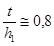
3.19. При проектировании монолитных железобетонных ростверков, объединяющих головы свай и распределяющих нагрузки на них, надлежит руководствоваться следующим:
ленточные ростверки предусматривать под кирпичные, крупноблочные и крупнопанельные стены линейно протяженных зданий и сооружений;
плитные ростверки устраивать под колонны, дымовые трубы, здания и сооружения точечного (башенного) типа.
3.20. Расчет ростверков надлежит выполнять в соответствии с "Руководством по проектированию свайных фундаментов" (НИИОСП им. Герсеванова, Госстрой СССР - М.: Стройиздат, 1980), а именно:
ленточных ростверков - в соответствии с рекомендациями приложений 9 и 10 указанного Руководства - на поперечную силу, изгибающий момент и раскрытие трещин;
плитных ростверков - согласно приложению 11 Руководства - на продавливание колонной и угловой сваей, поперечную силу в наклонных сечениях, на изгиб, на местное сжатие под торцом сборной колонны, на прочность стаканной части, на раскрытие трещин.
3.21. Железобетонные ростверки надлежит проектировать из бетона классов В12,5-В25 (М150-М300) на сжатие, назначаемых с учетом результатов данных расчетов силовых факторов, конструктивного назначения высоты ростверка и обеспечения его прочности. При этом глубина заложения ростверков назначается независимо от глубины промерзания.
3.22. Сопряжение свай с монолитными железобетонными ростверками обеспечивается посредством заделки в ростверк голов свай в соответствии с разделом 8 "Руководства по проектированию свайных фундаментов".
3.23. В состав рабочей документации на свайные фундаменты следует включать разрезы для характерных мест (со схематичным изображением свай и ростверка), совмещенные с инженерно-геологическими разрезами, а также программу инструментальных наблюдений за осадками зданий или сооружений в строительный и эксплуатационный периоды.
4.1. При проектировании свайных фундаментов вблизи существующих зданий и сооружений (см. п. 2.3) в рабочей документации должны быть предусмотрены мероприятия, исключающие возможность возникновения недопустимых деформаций существующих фундаментов, подземных коммуникаций и других инженерных конструкций, связанных с возможным существенным изменением сложившегося напряженного состояния грунтов основания и вызванных дополнительными статическими нагрузками от фундаментов вновь возводимых зданий и сооружений и снижением прочностных характеристик грунтов от динамических воздействий при погружении свай ударным или вибрационным способами. Рабочая документация должна содержать данные о применяемых механизмах и способах производства работ.
4.2. При устройстве фундаментов около существующих зданий и сооружений необходимо соблюдать следующие условия:
при устройстве котлованов не применять механизмов, вызывающих значительные динамические воздействия на грунт, например, экскаваторов с ковшом драглайн, не рыхлить грунт взрывным способом или снарядами типа клин-баба или шарбаба и т.п.;
не складировать в непосредственной близости от существующих зданий тяжелые штабеля грунта и строительных материалов;
для снижения уровня динамических воздействий на существующие фундаменты при погружении свай или шпунта ударным или вибрационным способами применять лидерные скважины с рыхлением грунта или способ статического вдавливания свай;
во всех случаях применения ударного способа погружения свай или шпунта масса молота должна быть больше массы сваи (шпунта) в 1,5-2 раза при высоте падения молота не более 0,5 м;
фронт свайных работ необходимо продвигать в направлении от существующих зданий и сооружений;
применение подмыва для облегчения погружения свай допускается при расстоянии не менее 20 м от существующих фундаментов.
4.3. Погружение свай ударным способом при расстоянии менее 20 м от существующих фундаментов необходимо выполнять с соблюдением требования "Инструкции по забивке свай вблизи зданий и сооружений" (ВСН 358-76 Минмонтажспецстрой СССР).
4.4. При возведении зданий и сооружений в несколько очередей рекомендуется производить работы по устройству нулевого цикла по всему пятну застройки или, по крайней мере, в пределах участков, расположенных в непосредственной близости от первой очереди строительства. При этом в случае устройства отдельных секций или смежных зданий соответственно на коротких и длинных сваях в первую очередь следует выполнять фундаменты на длинных сваях.
4.5. При устройстве подземных коммуникаций необходимо предусматривать мероприятия, обеспечивающие минимальные деформации грунта основания и свайных фундаментов возводимых зданий и сооружений. С этой целью магистральную трассу подземных коммуникаций следует прокладывать не ближе 6 м от фундаментов зданий или сооружений. В случае невозможности выполнения этого условия устройство подземных коммуникаций следует производить до начала возведения надземной части зданий (сооружений) либо под защитой ограждений из шпунта или "стена в грунте". При этом глубина заложения защитных ограждений должна превышать глубину заложения подземных коммуникаций на величину, определяемую расчетом устойчивости.
Рекомендуемое
Приведенный здесь способ определения конечных осадок ленточных свайных фундаментов (ЛСФ), расположенных в верхнем несущем слое, подстилаемом слабыми грунтами, базируется на решении смешанной упруго-пластической задачи с ее численной реализацией, осуществляемой методом конечных элементов.
Многообразие различных сочетаний исходных данных для расчета конечных осадок ЛСФ (гидрогеологических условий, характера и размеров напластований грунтов основания, их физико-механических характеристик и др.) не позволяет в пределах данного приложения дать исчерпывающий материал для решения задачи в любом возможном случае.
Здесь приведены вспомогательные графики, полученные на основании численного решения по упомянутой программе для характерных грунтовых условий некоторых районов Архангельской области, где нижние (коренные) прочные грунты залегают на глубине около 20 м, а верхний слой песков мощностью 8-14 м, в котором могут быть расположены свайные фундаменты, подстилается промежуточными слабыми слоями (черт. 1).
Ниже даются практические указания по определению осадок ЛСФ с конкретными исходными данными и примером их реализации.
1. Конечные осадки ЛСФ (Sk) следует определять с использованием графиков, представленных на черт. 2 - 14.
Графики построены для трех обобщенных схем напластований, представленных следующими грунтами;
песок мелкозернистый, средней плотности, водонасыщенный, модуль общей деформации Е1 = 9 МПа и Е1 = 27 МПа;
песок мелкозернистый, средней плотности, заиленный, водонасыщенный, модуль общей деформации Е2 = 7 МПа;
ил суглинистый, текучепластичный, модуль общей деформации Е3 = 2 Мпа;
песок пылеватый, плотный, водонасыщенный, с залеганием кровли на глубине 18±1 м от низа ростверка ЛСФ.
Модуль общей деформации Е4 = 28 МПа.
Нагрузки Q на 1 м ЛСФ в диапазоне, равном 400 - 800 кН/м.
2. В случае, когда величина модуля общей деформации верхних песков находится в пределах указанного выше диапазона, конечную осадку ЛСФ следует определять линейной интерполяцией.
Обобщенные схемы грунтовых оснований
1 - песок мелкозернистый, водонасыщенный; 2 - песок мелкозернистый, заиленный, водонасыщенный; 3 - ил текучепластичный; 4 - песок мелкозернистый, водонасыщенный, плотный
Черт. 1
I обобщенная схема, Е1 = 7 МПа
1 - Q = 400 кН/м; 2 - Q = 500 кН/м; 3 - Q = 600 кН/м; 4 - Q = 700 кH/м; 5 - Q = 800 кН/м
Черт. 2
II обобщенная схема, E1 = 9 МПа
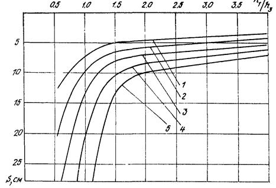
1 - Q = 400 кН/м; 2 - Q = 500 кН/м; 3 - Q = 600 кН/м; 4 - Q = 700 кH/м; 5 - Q = 800 кН/м
Черт. 3
II обобщенная схема, Е1 = 27 МПа
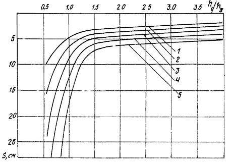
1 - Q = 400 кН/м; 2 - Q = 500 кН/м; 3 - Q = 600 кН/м; 4 - Q = 700 кH/м; 5 - Q = 800 кН/м
Черт. 4
III обобщенная схема, Е1 = 9 MПа
Q = 400 кН/м
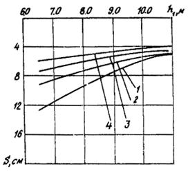
1 - 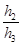
Черт. 5
Q = 500 кН/м
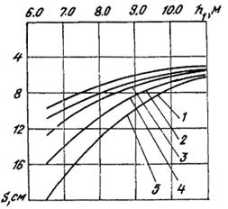
1 - = 0; 2 - = 0,2; 3 - = 0,5; 4 - = 1,0; 5 - = 4,0
Черт. 6
Q = 600 кН/м
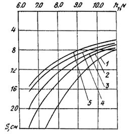
1 - = 0; 2 - = 0,3; 3 - = 0,5; 4 - = 1,0; 5 - = 4,0
Черт. 7
III обобщенная схема, E1 = 9 МПа
Q = 700 кН/м
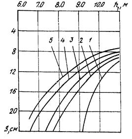
1 - = 0; 2 - = 0,3; 3 - = 0,4; 4 - = 1,0; 5 - = 4,0
Черт. 8
Q = 800 кН/м
1 - = 0; 2 - = 0,2; 3 - = 0,6; 4 - = 1,0; 5 - = 4,0
Черт. 9
III обобщенная схема, Е1 = 27 МПа
Q = 400 кН/м
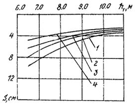
1 - = 0; 2 - = 0,5; 3 - = 1,0; 4 - = 4,0
Черт. 10
III обобщенная схема, Е1 = 27 МПа
Q = 500 кН/м
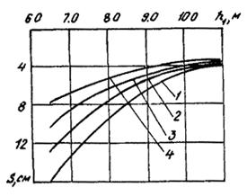
1 - = 0; 2 - = 0,5; 3 - = 1,0; 4 - = 4,0
Черт. 11
Q = 600 кН/м
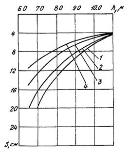
1 - = 0; 2 - = 0,2; 3 - = 1,0; 4 - = 4,0
Черт. 12
Q = 700 кН/м
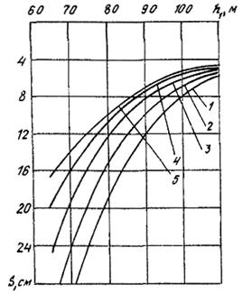
1 - = 0; 2 - = 0,4; 3 - = 1,0; 4 - = 1,5; 5 - = 4,0
Черт. 13
III обобщенная схема, Е1 = 27 Мпа
Q = 800 кН/м
1 - = 0; 2 - = 0,5; 3 - = 1,0; 4 - = 4,0
Черт. 14
К примеру расчета конечной осадки ЛСФ
Черт. 15
3.
Графики построены для однорядных свайных фундаментов с применением
железобетонных призматических свай сечением 40´40 см и
оптимальной величины относительной глубины погружения в верхний несущий слой 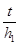
При других значениях этого отношения величина конечной осадки будет большей.
4. Последовательность определения конечных осадок следующая:
выбирается обобщенная схема напластования, соответствующая рассматриваемому случаю;
определяются исходные параметры (Q, E, h1/h2, h2/h3, h);
по соответствующей кривой на графиках определяется значение конечной осадки ЛСФ.
5. Пример определения конечной осадки ЛСФ.
Исходные данные приведены ниже (черт. 15).
Геологические условия характеризуются следующим напластованием грунтов сверху вниз:
песок мелкозернистый, водонасыщенный, модуль деформации Е1 = 18 МПа, толщина слоя h1 = 9,0 м;
песок заиленный, водонасыщенный, Е2 = 9 МПа, h2 = 6,5 м;
ил текучепластичный, Е3 = 2 МПа, h3 = 2,5 м;
песок нижний, мелкозернистый, водонасыщенный, Е4 = 28 МПа, h4 >4,0 м.
Погонная нагрузка на ЛСФ Q = 800 кH/м.
Оптимальная длина свай (от низа ростверка) t » 0,8 h1 = 0,8´9,0 » 7,0 м.
В соответствии с характером напластованных грунтов определение ведем по обобщенной схеме III.
Определяем
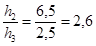
По графикам черт. 9 (для Е1 = 9 МПа) находим значение осадки (S), соответствующее отношению = 2,6; получаем = 15,8 см. По графику на черт. 14 (Е1 = 27 МПа) определяем значение осадки, соответствующее = 2,6. Имеем: = 10,7 см.
По интерполяции между и для Е1 = 18 МПа определяем конечную осадку ЛСФ:
Sk » 13,3 см.
СОДЕРЖАНИЕ
|
2. Требования к инженерно-геологическим изысканиям.. 2 Приложение Определение конечных осадок ленточных свайных фундаментов. 7 |